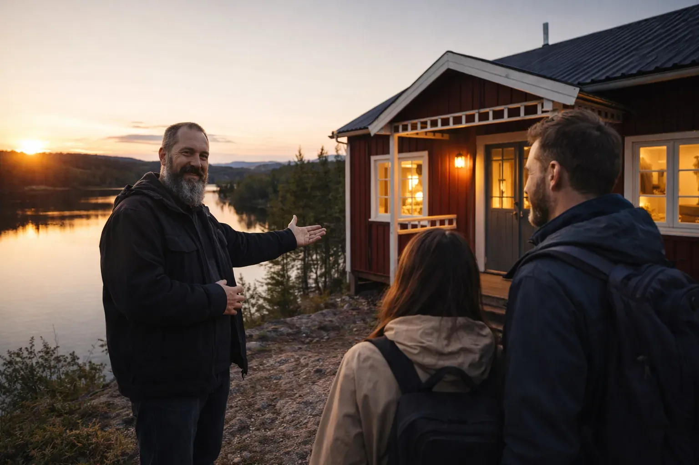
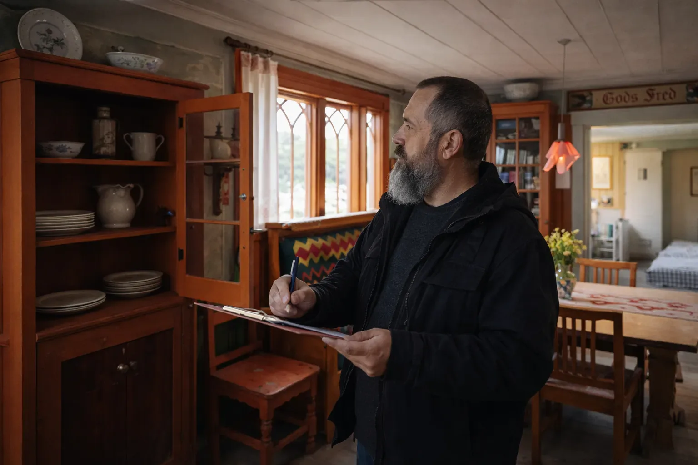
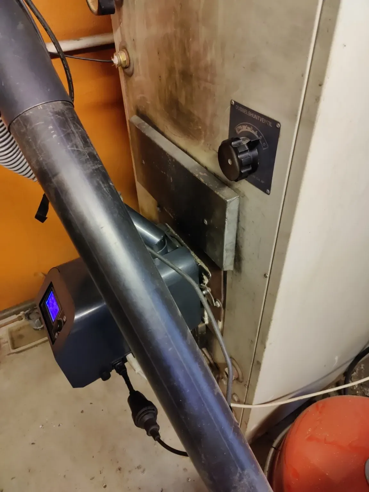

Förberedelse inför gäster
Överenskomna kontroller före ankomst: värme, belysning, vatten, uppenbara fel, tillträde och husets allmänna intryck.


FRITIDSHUS & UTHYRNINGSSTÖD
Praktisk fastighetsskötsel, lokal uppföljning och hjälp på plats vid uthyrning av fritidshus i Värmland.
PRAKTISKT LOKALT STÖD
Ett fritidshus i Sverige behöver omsorg även när du inte är där. När huset står tomt vill du veta att allt är i ordning; vid uthyrning behöver huset och dess utrustning vara redo för gäster. Med lokal fritidshusskötsel i Värmland hjälper vi dig att samordna tillsyn, förberedelser och praktiskt underhåll. Före gästernas ankomst kontrollerar vi de punkter vi har kommit överens om. Efter avresan ser vi vad som behöver städas, bytas ut, repareras eller undersökas närmare.
Med Lesjöfors som bas besöker vi ditt fritidshus och utför de arbeten du har kommit överens om med oss. Det kan handla om en huskontroll, förberedelser inför gäster, mindre reparationer och samordning av städning eller underhåll. Om ett problem uppstår diskuterar vi vad som behövs och stämmer av nästa steg med dig. Tydliga foton och uppdateringar håller dig informerad om husets skick och det utförda arbetet, även på distans.
Vårt stöd vid uthyrning anpassas efter hur du använder fritidshuset: för egna vistelser, uthyrning eller en kombination av båda. Tillsammans bestämmer vi vilka besök och arbeten som passar din planering och dina bokningar. Du behåller kontrollen över bokningar, kostnader och beslut; vi är din lokala kontakt för det överenskomna arbetet på plats.
FRÅN VISNING TILL UTHYRNING
Vill du ha stöd från den första visningen till ett fritidshus som är redo för uthyrning? Vi kan samordna hela processen: stöd vid visning och köp, renovering och reparationer, möblering och förberedelser inför gäster samt därefter tillsyn och stöd vid uthyrning.
Genom vårt lokala nätverk kan vi förmedla rätt kontakter för stöd vid köp, uthyrning och arbeten som kräver en certifierad specialist. Vi samordnar de berörda parterna och arbetena, så att du har en lokal kontakt genom hela processen. Tillsammans bestämmer vi vilka delar du vill ha hjälp med och kommer tydligt överens om genomförande och kostnader.
Berätta om dina planer →UTHYRNINGSSTÖD
När du hyr ut ditt fritidshus kan arbetet på plats snabbt bli den svåra delen, särskilt om du bor långt bort. Tjänsten kan anpassas efter det du vill få skött lokalt.
Detta fungerar tillsammans med dina egna bokningar, Airbnb/Booking.com eller andra uthyrningsupplägg. Nico on Point Services kan sköta det praktiska utan att behöva bli bokningsplattform eller uthyrningsförmedlare.
Överenskomna kontroller före ankomst: värme, belysning, vatten, uppenbara fel, tillträde och husets allmänna intryck.
Ett praktiskt besök mellan gästvistelser för att upptäcka skador, saknade saker, underhållsbehov och annat som bör åtgärdas inför nästa vistelse.
Vi hjälper till med städning och sänglinne och erbjuder tvättservice för sängkläder och handdukar. Arbetet och återlämningen avtalas i förväg.
Nyckelöverlämning, kontroll av nyckelbox eller hjälp med tillträde kan ordnas när det passar uthyrningsupplägget.
Vid praktiska problem som inte är akuta kan vi titta på situationen, hjälpa till med enklare åtgärder och samordna nästa steg med dig.
Kort och tydlig återkoppling med foton när det behövs, så att du vet vad som hänt i huset utan att vara där själv.
UTHYRNINGSSTÖD I PRAKTIKEN
Bilderna visar den befintliga fritidshusservicen: kontroll av fastigheten, välkomnande och hjälp till gäster samt hantering av praktiska frågor på plats.



FASTIGHETSOMSORG
Visuella kontroller inne och ute, med foton och en kort uppdatering efter besöket.
Praktiska kontroller av värme, utsatta vattenanslutningar, tillträde och andra överenskomna förberedelser inför kyla.
Ett lokalt besök för att leta efter synliga problem när oväder har passerat området.
Enkla överenskomna uppgifter så att fastigheten är lättare att använda när du kommer efter en lång resa.
Mindre reparationer, montering, felsökning och underhåll kan ofta kombineras med ett fastighetsbesök.
Om specialistarbete behövs kan vi hjälpa till med tillträde, praktisk samordning och närvaro enligt överenskommelse.
SÅ KAN DET FUNGERA
Alla fastigheter behöver inte samma omsorg. Vissa ägare vill bara ha en kontroll efter en storm eller inför vintern. Andra föredrar regelbundna besök när huset står tomt.
Vi kommer i förväg överens om vad som ska kontrolleras, hur ofta du vill ha en uppdatering och vad vi får göra utan att kontakta dig först.
ETT ENKELT UTHYRNINGSUPPLÄGG
KUNDOMDÖMEN
“Nico från On Point Service kan vi varmt rekommendera. Han är kreativ, tänker aktivt tillsammans med oss och kommer alltid med lösningar. Nico är alltid redo att hjälpa till och är mycket trevlig att samarbeta med. Vi har flera fritidshus och har samarbetat med Nico en tid, med stor tillfredsställelse.”
Vi fick mycket bra service för vårt fritidshus i Sverige. Vi ser fram emot ett bra samarbete med Nico!
Dessa omdömen kommer från Google och har översatts från nederländska.
Lämna en Google-recension →
PRISUPPGIFTER
Vi kommer i förväg överens om arbetet och kostnaden utifrån ditt hus och det stöd du behöver. Alla priser är inklusive moms.
FRITIDSHUSSKÖTSEL
Vi erbjuder tvättservice för ditt fritidshus. Vi hämtar sängkläder och handdukar, tvättar, torkar och viker dem och lämnar tillbaka dem vid nästa tillsynsbesök. Bäddning ingår i städservicen.
BERÄTTA HUR DU ANVÄNDER HUSET
Skicka fastighetens läge, hur ofta den hyrs ut och vad du vill få skött lokalt. Vi kan anpassa ett praktiskt upplägg efter ditt bokningsmönster.